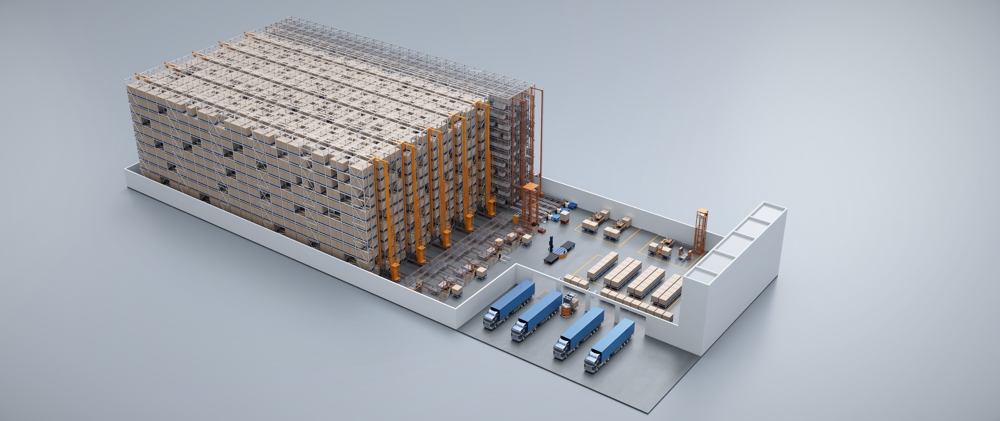
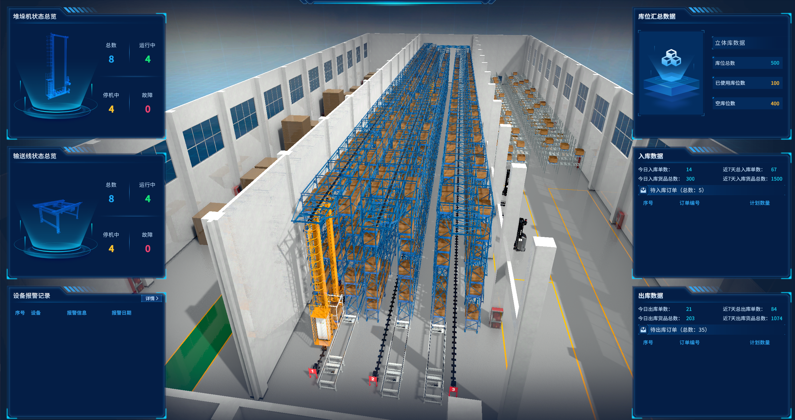
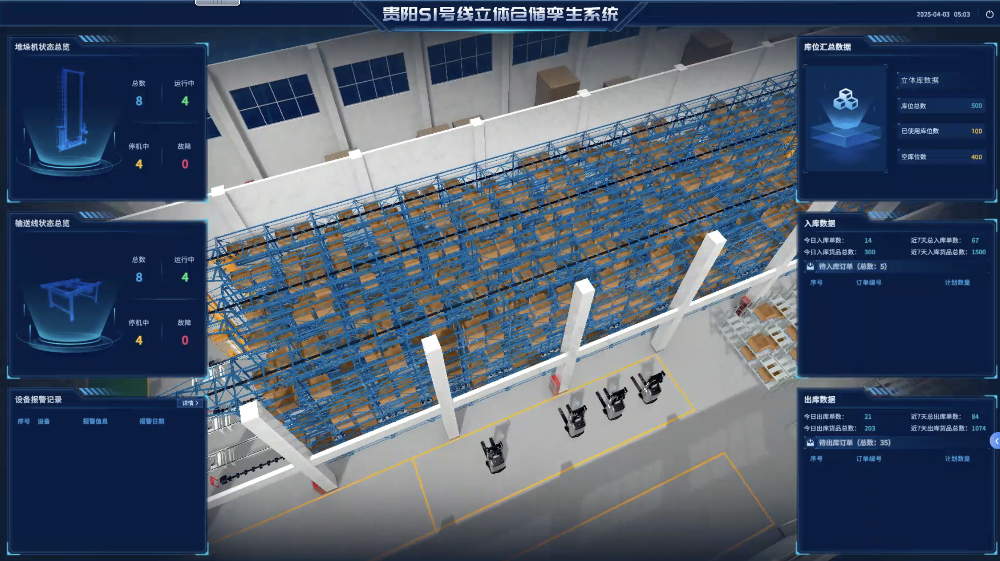
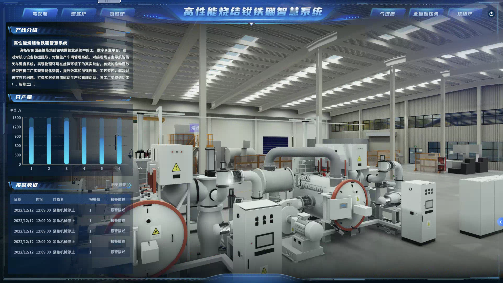

工业数字孪生系统
3D数字孪生模型展示


加载中...
正在加载3D模型...
数字孪生创建过程
1
数据采集
通过IoT传感器、激光扫描和CAD图纸获取设施全维度数据
2
模型构建
利用专业软件构建高精度3D模型，还原物理世界细节
3
数据集成
将实时运营数据与模型关联，实现动态映射
4
系统部署
在云端或本地服务器部署，支持多终端访问
预测性维护功能
设备故障预警
通过机器学习分析设备运行数据，提前发现异常模式，在故障发生前发出预警，减少非计划停机时间。
性能优化建议
基于数字孪生模拟不同运营场景，自动生成设备参数调整建议，提升整体运行效率15-30%。
寿命预测
结合设备使用频率、维护记录和环境因素，预测关键部件剩余寿命，科学规划备件采购和更换计划。
实时监控面板示例
实际应用案例
贵阳S1号线立体仓储孪生系统
通过工业数字孪生系统模拟真实立体的仓储情况，对每天的出入库数据以及库位占用情况进行实时监控，优化了堆垛机、输送线和不同设备的协同工作模式。

优化前
- 月均能耗: 85,000 kWh
- 设备综合效率: 72%
- 峰值负载: 450 kW
优化后
- 月均能耗: 68,000 kWh -20%
- 设备综合效率: 86% +14%
- 峰值负载: 380 kW -15.5%
高性能烧结钕铁硼智慧系统
海拓智创园高性能烧结钕铁硼智慧系统中的工厂数字孪生平台。通过对核心设备数据提取，对接生产车间管理系统，对接现场自主导航智能叉车调度系统，实现物理环境在虚拟环境下的真实映射，有效的推动硼砂成型压机工厂实现智能化运营，提升效率和加强质量、工艺监控，解决过去存在的问题。打造实时信息流驱动生产和管理活动，将工厂变成透明工厂、智能工厂。

实施前
- 年平均非计划停机: 42小时
- 故障预测准确率: N/A
- 维护成本: ¥380,000/年
实施后
- 年平均非计划停机: 9小时 -78.6%
- 故障预测准确率: 92%
- 维护成本: ¥260,000/年 -31.6%
准备好体验数字孪生的力量了吗？
我们的专家团队将为您定制专属的数字孪生解决方案